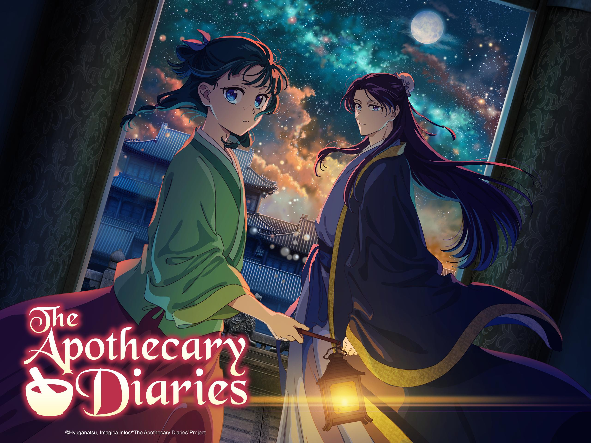

The Apothecary Diaries is a historical mystery anime set in a fictional East Asian-inspired empire, focusing on the brilliant herbalist Mao Mao, who is sold into servitude in the imperial palace. Using her vast knowledge of medicine and poisons, Mao Mao solves complex medical and political mysteries for the emperor's officials, particularly the influential Jinshi. The series, known for its unique blend of detective work and court intrigue, was produced by Toho Animation Studio and OLM, with Norihiro Naganuma as director for the first season, and has been confirmed for a new sequel after the second season. [1, 2, 3, 4, 5]
Series Overview
• Genre: Historical Mystery, Court Intrigue, Drama [1, 6]
• Setting: A fictional country inspired by Imperial China [6, 7]
• Plot: Mao Mao, a young apothecary with a sharp intellect and unconventional personality, is sold into the emperor's inner court. She uses her pharmaceutical skills to unravel the mysterious illnesses and political plots plaguing the royal family, eventually catching the attention of the handsome and influential Jinshi. [1, 3, 4]
Key Details
• Production: Toho Animation Studio and OLM [2]
• Director: Norihiro Naganuma (Season 1), Norihiro Naganuma also directed the original source material. [2]
• Music: Composed by Satoru Kōsaki, Kevin Penkin, and Alisa Okehazama. [2]
• Original Source: Based on a light novel series by Natsu Hyūga. [2]
• Seasons: The two-consecutive-cours first season aired from October 2023 to March 2024. A sequel was announced in July 2025 after the second season concluded. [2, 5, 8]
Why it Stands Out
• Unique Genre Blend: It offers a refreshing change from typical action or isekai genres, focusing instead on intellectual challenges, practical science, and complex characters. [1, 6]
• Compelling Protagonist: Mao Mao is an independent, curious, and sarcastic character who is driven by a thirst for knowledge and truth, making her a highly engaging protagonist. [1]
• Detailed World-Building: The series is praised for its authenticity, attention to detail, and realistic portrayal of the imperial palace and its inhabitants, making the historical setting feel alive. [1, 7]
• Popularity: The anime is highly popular and is considered one of the most watched shows, noted as the second most popular on Crunchyroll. [5, 6]
AI responses may include mistakes.
[1] https://www.imdb.com/title/tt26743760/
[2] https://en.wikipedia.org/wiki/List_of_The_Apothecary_Diaries_episodes
[3] https://www.imdb.com/title/tt26743760/plotsummary/
[4] https://www.rottentomatoes.com/tv/the_apothecary_diaries
[5] https://www.crunchyroll.com/news/latest/2025/7/4/the-apothecary-diaries-season-2-anime-sequel-announced
[6] https://www.youtube.com/watch?v=uOxmGTnWjB8
[7] https://www.youtube.com/watch?v=tva_SyGLz0k
[8] https://www.crunchyroll.com/news/announcements/2025/1/8/the-apothecary-diaries-season-2-release-date-crunchyroll